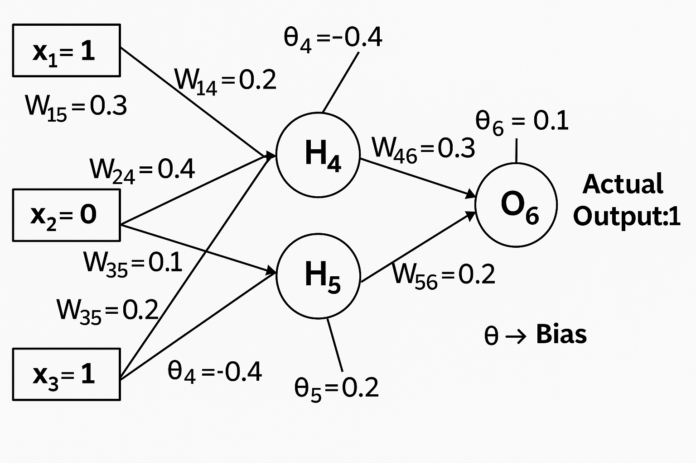

Neural Network
Neural networks rely on two key mathematical processes: forward propagation (for predictions) and backward propagation (for learning via gradient descent).
The Math Behind Neural Network Forward and Backward Propagation
Neural networks rely on two key mathematical processes: forward propagation (for predictions) and backward propagation (for learning via gradient descent). In this post, we break down the core math behind these steps using a simple 3-layer neural network example. Hand-written calculations and diagrams from my notes are included for clarity.
Network Architecture
We consider a neural network with:
- Input layer: 3 neurons (x₁, x₂, x₃)
- Hidden layer: 2 neurons (h₄, h₅)
- Output layer: 1 neuron (o₆)
Input Layer (x₁, x₂, x₃) → Hidden Layer (h₄, h₅) → Output Layer (o₆)

1. Forward Pass
The forward pass computes the output of each neuron layer-by-layer using weights (ω), biases (b), and activation functions (sigmoid here).
Hidden Layer Calculations
For neuron 4 (h₄):
a4 = sigmoid(inputs * weights + b4)
From the notes:
a4 = 1 / (1 + exp(-(-0.7))) = 0.332
For neuron 5 (h₅):
a5 = 1 / (1 + exp(-0.1)) = 0.325
Output Layer Calculation
o6 = sigmoid(a4 * ω46 + a5 * ω56 + b6)
a6 = 1 / (1 + exp(-(-0.206))) = 0.194
2. Loss Calculation
The error (loss) is computed between the prediction (o₆) and the target value.
From the notes (target = 1):
Error = 1 - 0.414 = 0.526
3. Backward Propagation
Backward propagation applies the chain rule to compute gradients for each weight and bias.
Output Neuron Gradient (δ₆)
δ6 = Error × sigmoid'(o6)
where
sigmoid'(z) = sigmoid(z) * (1 - sigmoid(z))
From the notes:
δ6 = 0.414 × (1 - 0.414) × (1 - 0.414) = 0.131
Hidden Neuron Gradients
For neuron 5 (δ₅):
δ5 = a5 * (1 - a5) × (δ6 * ω56)
δ5 = 0.325 × (1 - 0.525) × (0.2 × 0.131) = 0.095
For neuron 4 (δ₄):
δ4 = a4 * (1 - a4) × (δ6 * ω46)
δ4 = 0.332 × (1 - 0.332) × (0.2 × 0.131) = 0.095
4. Weight Updates
Weights are updated using the computed gradients and a learning rate (η=0.9).
Update Rule:
Δωij = η × δi × aj
ωij_new = ωij_old + Δωij
Example Updates (see notes):
-
Weight ω16 (input 1 → output 6):
Δω16 = 0.9 × 0.131 × 0.392 = 0.046 ω16_new = 0.939 - 0.3 = 0.639 -
Weight ω35 (input 3 → hidden 5):
Δω35 = 0.9 × 0.00653 × 1 = 0.00588 ω35_new = 0.2 - 0.00857 = 0.19143
5. Bias Updates
Biases are updated similarly:
bi_new = bi_old + η × δi
For output neuron 6:
b6_new = 0.1 + (0.9 × 0.131) = 0.218
Key Equations
| Component | Equation |
|---|---|
| Forward Pass | a_j = sigmoid(sum_over_i(ω_ij * x_i) + b_j) |
| Sigmoid | sigmoid(z) = 1 / (1 + exp(-z)) |
| Output Gradient | δ_k = (y - y_hat) * sigmoid'(o_k) |
| Hidden Gradient | δ_j = sigmoid'(a_j) * sum_over_k(δ_k * ω_jk) |
| Weight Update | Δω_ij = η * δ_j * a_i |
| Bias Update | Δb_j = η * δ_j |
Why This Matters
Backpropagation efficiently computes gradients by:
- Forward pass: Calculate predictions and cache values.
- Backward pass: Apply the chain rule for error gradients.
- Update: Adjust weights and biases to minimize loss.
Your files and these notes demonstrate a practical implementation of these principles—calculating gradients and updating weights. While the math may appear complex, it systematically optimizes the network using calculus and linear algebra.
Handwritten notes and calculations for visual reference:
- Network diagram:
- Forward pass & error calculation:
- Backpropagation and weight update math:
- Bias update math:
References:
- Neural Networks and Deep Learning
- CS231n: Convolutional Neural Networks for Visual Recognition (Stanford)
- Example Back Propagation Algorithm Multi-Layer Perceptron Network